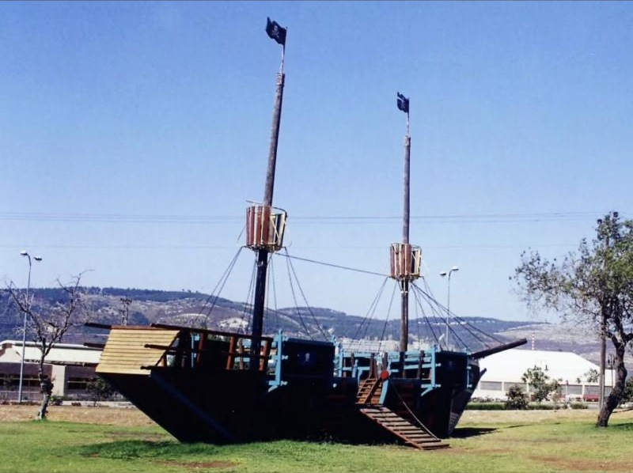
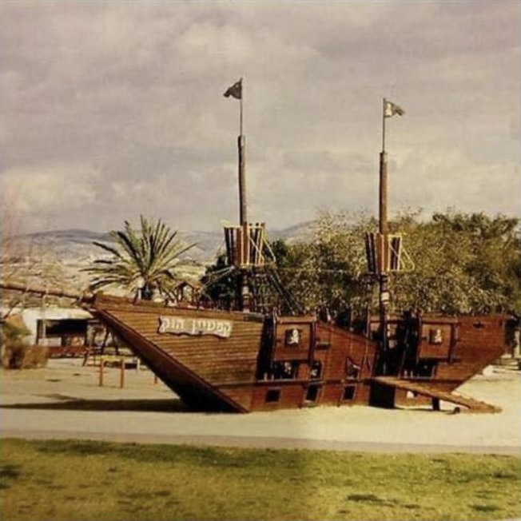
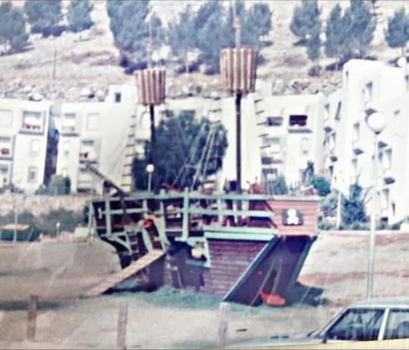

בסוף שנות השמונים נחתה ספינת פיראטים מעץ בגן הציבורי של יותר מעשרים ערים בישראל. שני תרנים, סלי תצפית, הגה, ובטן שאפשר לזחול בתוכה.
מי שגדל לידה קרא לה ״הספינה שלנו״. כמעט אף אחד לא ידע שספינה כמעט זהה עומדת גם בעיר השכנה, ושאת הראשונות בנה יצרן אחד מנס ציונה.
אספתי כאן את מה שהצלחתי למצוא עליהן: איפה עמדו, מי בנה אותן, ומה עלה בגורלן. בהמשך אפשר גם לעלות על אחת.
בניתי דגם של הספינה לפי התצלומים. אפשר להקיף אותה מבחוץ, או לעלות ולראות אותה מגובה של ילד.
מאחורי הספינה עמד אדם אחד, יענקל׳ה פיינברג. החברה שלו, ג׳י.פי.איי, התחילה בתחילת שנות השבעים כיצרנית פיברגלס. בתחילת שנות השמונים היא עברה לעץ ולמתקני משחק.
הרעיון לספינה, כך סיפר פיינברג ל״מעריב״ בפברואר 1989, בא לו בפורים. התכנון נמשך שנה וחצי. הוא נשען על שרטוטים של ספינותיו של פרנסיס דרייק, יורד הים האנגלי מהמאה ה־16, ואת התוצאה רשם כמדגם.
הספינות נבנו במפעל בנס ציונה, מעץ אורן שהגיע מפינלנד. בבטן היו מחילות לזחילה. מעליהן סיפון, חבלים ושני תרנים. בחרטום חיכה טלסקופ, ומאחור הגה.
ביוני 1988 כבר עמדו ארבע: בקריית שמונה, בנצרת עילית, בדימונה ובאילת. בסוף אותו חודש הוזמנו גם ילדי גבעתיים לעלות על שלהם. עד פברואר 1989 קנו גם יבנה וראשון לציון. המחיר היה בערך 54,000 שקל, ועוד מע״מ.
מאז נזכרות ספינות דומות בעוד ועוד ערים, מנהריה ועד קריית מלאכי. לא מצאתי תיעוד שכולן יצאו מאותו מפעל. אבל מי שמסתכל בתצלומים מתקשה להבדיל ביניהן.


ברעות הספינה לא עומדת בתקן הבטיחות ומפורקת. שנה אחר כך תושבים מנסים להחזיר אותה.
בגבעתיים הוצע להשקיע אותה בחול ולהפוך אותה לפינת ישיבה. בסוף היא הוחלפה בספינה חדשה.
בכוכב יאיר מפרקים את הספינה, אולי האחרונה שעוד עמדה.